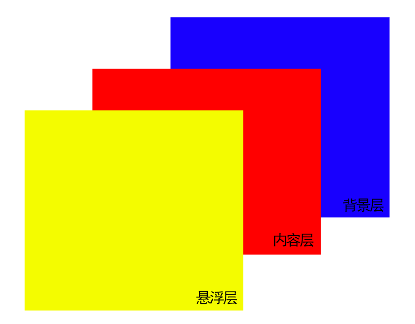
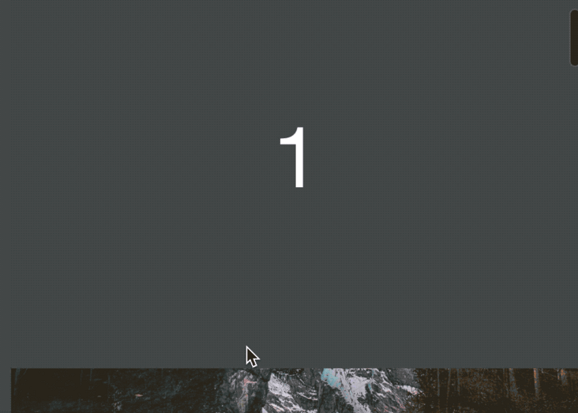
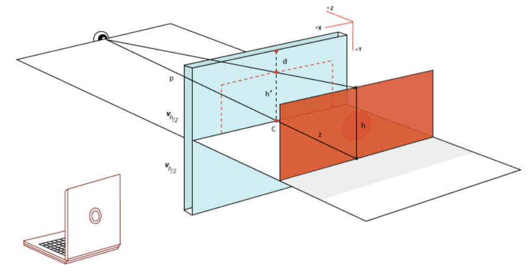

如何使用css完成视差滚动效果?
参考答案
一、是什么
视差滚动（Parallax Scrolling）是指多层背景以不同的速度移动，形成立体的运动效果，带来非常出色的视觉体验
我们可以把网页解刨成：背景层、内容层、悬浮层

当滚动鼠标滑轮的时候，各个图层以不同的速度移动，形成视觉差的效果

二、实现方式
使用css形式实现视觉差滚动效果的方式有：
- background-attachment
- transform:translate3D
background-attachment
作用是设置背景图像是否固定或者随着页面的其余部分滚动
值分别有如下：
- scroll：默认值，背景图像会随着页面其余部分的滚动而移动
- fixed：当页面的其余部分滚动时，背景图像不会移动
- inherit：继承父元素background-attachment属性的值
完成滚动视觉差就需要将background-attachment属性设置为fixed，让背景相对于视口固定。及时一个元素有滚动机制，背景也不会随着元素的内容而滚动
也就是说，背景一开始就已经被固定在初始的位置
核心的css代码如下：
section {
height: 100vh;
}
.g-img {
background-image: url(...);
background-attachment: fixed;
background-size: cover;
background-position: center center;
}整体例子如下：
<style>
div {
height: 100vh;
background: rgba(0, 0, 0, .7);
color: #fff;
line-height: 100vh;
text-align: center;
font-size: 20vh;
}
.a-img1 {
background-image: url(https://images.pexels.com/photos/1097491/pexels-photo-1097491.jpeg);
background-attachment: fixed;
background-size: cover;
background-position: center center;
}
.a-img2 {
background-image: url(https://images.pexels.com/photos/2437299/pexels-photo-2437299.jpeg);
background-attachment: fixed;
background-size: cover;
background-position: center center;
}
.a-img3 {
background-image: url(https://images.pexels.com/photos/1005417/pexels-photo-1005417.jpeg);
background-attachment: fixed;
background-size: cover;
background-position: center center;
}
</style>
<div class="a-text">1</div>
<div class="a-img1">2</div>
<div class="a-text">3</div>
<div class="a-img2">4</div>
<div class="a-text">5</div>
<div class="a-img3">6</div>
<div class="a-text">7</div>transform:translate3D
同样，让我们先来看一下两个概念transform和perspective：
- transform: css3 属性，可以对元素进行变换(2d/3d)，包括平移 translate,旋转 rotate,缩放 scale,等等
- perspective: css3 属性，当元素涉及 3d 变换时，perspective 可以定义我们眼睛看到的 3d 立体效果，即空间感
3D视角示意图如下所示：

举个例子：
<style>
html {
overflow: hidden;
height: 100%
}
body {
/* 视差元素的父级需要3D视角 */
perspective: 1px;
transform-style: preserve-3d;
height: 100%;
overflow-y: scroll;
overflow-x: hidden;
}
#app{
width: 100vw;
height:200vh;
background:skyblue;
padding-top:100px;
}
.one{
width:500px;
height:200px;
background:#409eff;
transform: translateZ(0px);
margin-bottom: 50px;
}
.two{
width:500px;
height:200px;
background:#67c23a;
transform: translateZ(-1px);
margin-bottom: 150px;
}
.three{
width:500px;
height:200px;
background:#e6a23c;
transform: translateZ(-2px);
margin-bottom: 150px;
}
</style>
<div id="app">
<div class="one">one</div>
<div class="two">two</div>
<div class="three">three</div>
</div>而这种方式实现视觉差动的原理如下：
- 容器设置上 transform-style: preserve-3d 和 perspective: xpx，那么处于这个容器的子元素就将位于3D空间中，
- 子元素设置不同的 transform: translateZ()，这个时候，不同元素在 3D Z轴方向距离屏幕（我们的眼睛）的距离也就不一样
- 滚动滚动条，由于子元素设置了不同的 transform: translateZ()，那么他们滚动的上下距离 translateY 相对屏幕（我们的眼睛），也是不一样的，这就达到了滚动视差的效果
如何使用CSS完成视差滚动效果？
视差滚动效果是一种在网页设计中常用的技术，它通过让背景元素相对于前景内容以不同的速度滚动，来创建深度和动态效果。以下是实现视差滚动效果的基本步骤：
1. 准备HTML结构
首先，你需要一个多层次的布局结构，通常包括背景层和内容层。
<div class="parallax-container">
<div class="parallax-background"></div>
<div class="content">
<!-- 这里是主要内容 -->
</div>
</div>2. 设置CSS样式
使用CSS设置各个层的样式，特别是背景层的定位和大小。
.parallax-container {
position: relative;
overflow: hidden;
height: 500px; /* 根据需要设置高度 */
}
.parallax-background {
position: absolute;
top: 0;
left: 0;
right: 0;
bottom: 0;
background-image: url('background.jpg'); /* 背景图片 */
background-attachment: fixed; /* 固定背景，不随滚动条滚动 */
background-size: cover;
}
.content {
position: relative;
z-index: 10; /* 确保内容层在背景层之上 */
color: #fff; /* 内容颜色 */
}3. 使用JavaScript增强效果
虽然可以通过纯CSS实现简单的视差效果（如使用background-attachment: fixed;），但要创建更复杂的视差效果，可能需要JavaScript来动态调整背景层的位置。
window.addEventListener('scroll', function() {
var scrolledHeight = window.pageYOffset;
document.querySelector('.parallax-background').style.transform = 'translateY(' + -scrolledHeight * 0.5 + 'px)';
});4. 优化性能
视差滚动效果可能会影响页面性能，特别是在移动设备上。因此，考虑以下优化策略：
使用requestAnimationFrame代替setInterval或setTimeout来平滑滚动动画。<br>只在需要视差效果的区域使用视差滚动，避免过度使用。<br>考虑使用CSS的transform属性代替top或background-position，以利用GPU加速。
5. 兼容性和响应式设计
确保视差效果在不同设备和浏览器上都能正常工作，并且响应式地适应不同屏幕尺寸。
考察重点
- 对视差滚动效果的理解及其实现原理。
- 掌握CSS和JavaScript在视差滚动效果中的应用。
- 了解性能优化和兼容性问题的处理方法。